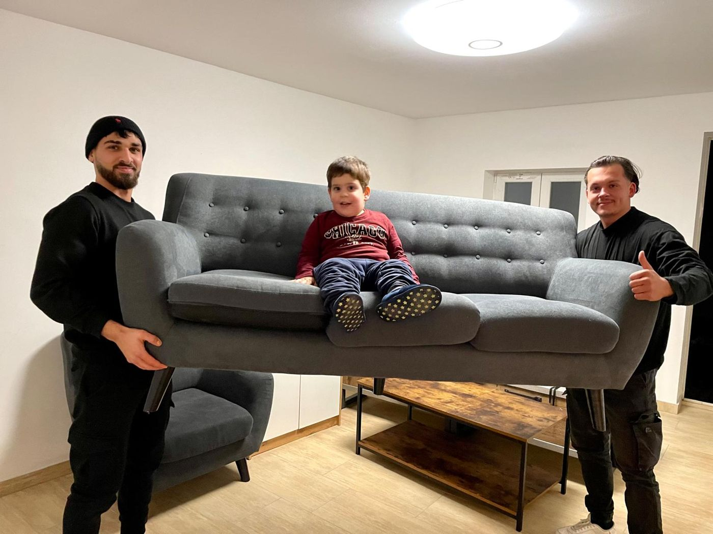
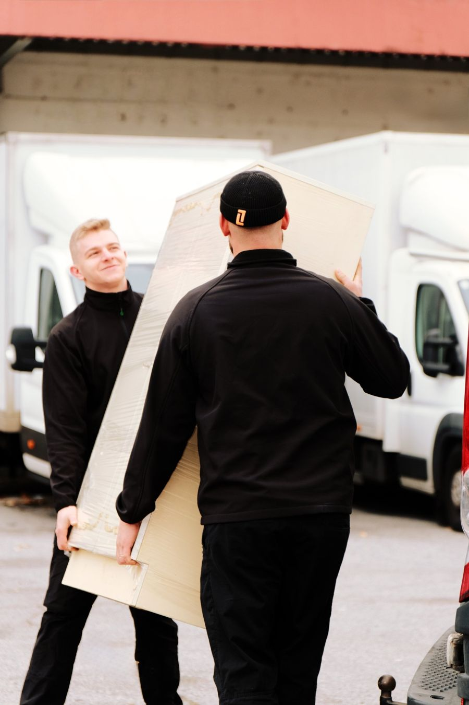

Eine Umzug Checkliste für Wien funktioniert am besten nach Zeitplan: Sie beginnen etwa 8 Wochen vorher und haken Schritt für Schritt bis zum Meldezettel nach dem Einzug ab. Hier finden Sie alle Punkte, dazu die Liste, wo Sie überall Ihre Adresse ändern müssen.


Stand: Oktober 2026 · von Kamil Stopka, Inhaber von packdas! · Checkliste ausdrucken
Auf eine Umzug Checkliste gehören drei Dinge: die Organisation des Umzugs selbst, die Behördenwege und die Adressänderungen bei Verträgen und Ämtern. Am einfachsten arbeiten Sie sie in sechs Etappen ab, von 8 Wochen vorher bis zu den ersten Tagen in der neuen Wohnung.
Die Checkliste unten eignet sich auch als Checkliste für den Umzug in Österreich insgesamt, denn die Reihenfolge ist überall gleich. Wiener Besonderheiten wie Meldebehörde, Parkpickerl und die Halteverbotszone vor dem Haus sind eigens vermerkt. Drucken Sie die Seite einfach aus, dann haben Sie Ihre Umzug Checkliste zum Abhaken auf Papier. Wenn Sie lieber eine Komplettlösung wollen, schauen Sie auf unserer Seite Umzug Wien vorbei, dort sehen Sie, was wir bei einer Übersiedlung übernehmen.
Zuerst klären Sie Termin, Kündigung und Budget, denn davon hängt alles Weitere ab. Je früher der Termin fixiert ist, desto leichter finden Sie auch eine Umzugsfirma, die an Ihrem Wunschtag Zeit hat.
Einen Anhaltspunkt für das Budget liefert unsere Übersicht Umzugskosten Wien. Der Preis hängt unter anderem von der Menge Ihrer Möbel ab: Eine 2-Zimmer-Wohnung mit nur Sofa und Kasten ist schneller übersiedelt als eine voll eingerichtete.
Zum freien Tag: Einen generellen Anspruch auf bezahlte Freistellung beim Wohnungswechsel gibt es nicht, er hängt vom Kollektivvertrag ab. Laut WKO räumen zahlreiche Kollektivverträge eine gewisse bezahlte Freizeit dafür ein. Fehlt eine solche Regelung, gilt überwiegend, dass der Wohnungswechsel in der Freizeit zumutbar ist. Die Entgeltfortzahlung beträgt in der Regel höchstens eine Woche pro Anlassfall. Fragen Sie deshalb früh nach.
Vier Wochen vor dem Umzug sortieren Sie aus, buchen die Umzugsfirma und kümmern sich um Verträge. Wer jetzt ausmistet, packt später weniger und spart Tragezeit am Umzugstag.
Bei größeren Mengen, etwa einem vollen Keller oder einer ganzen Wohnung, hilft eine Entrümpelung in Wien. Wir räumen aus, transportieren ab und übergeben besenrein. Sperrige Einzelstücke, die Sie nicht mehr brauchen oder separat transportieren möchten, bringt der Kleintransport von A nach B.
Beim Energieversorger gilt: Für An- und Abmeldung ist der jeweilige Versorger zuständig, die Abmeldung erfordert meist eine schriftliche Kündigung unter Einhaltung einer Frist. Das steht bei oesterreich.gv.at. Kümmern Sie sich daher rechtzeitig darum.
Zur Halteverbotszone: Eine Halteverbotszone braucht eine behördliche Genehmigung und lässt sich nicht von heute auf morgen organisieren. Nach Absprache übernimmt packdas! die Abwicklung, von der Genehmigung bis zum Aufstellen der Verkehrszeichen. Die Kosten stehen in Ihrem Angebot. Details lesen Sie unter Halteverbotszone Wien.
Als Erstes packen Sie alles, was Sie im Alltag nicht brauchen: Saisonkleidung, Bücher, Deko, Geschirr für Gäste und Dinge aus Keller oder Abstellraum. Die tägliche Kleidung, Küchenutensilien und Hygieneartikel kommen zuletzt in die Kartons.
Beschriften Sie jeden Karton mit Zielzimmer und Inhalt, und kennzeichnen Sie zerbrechliche Kartons deutlich. So wissen Helfer und Umzugsteam sofort, wohin eine Kiste gehört.
Der Nachsendeauftrag der Post kann online, in der Postfiliale oder bei einem Post Partner beauftragt werden. Die Post empfiehlt, ihn spätestens 3 Tage vor dem gewünschten Starttermin zu bestellen. Die Laufzeit beträgt mindestens 3 und höchstens 12 Monate.
Wenn Sie für das Tragen zusätzliche Hände brauchen, finden Sie bei der Transporthilfe in Wien Umzugshelfer und Möbelträger, auf Wunsch mit LKW oder nur als Tragehilfe.
In der letzten Woche erledigen Sie alles, was kurz vor dem Umzug sein muss: Zähler ablesen, Möbel für den Abbau vorbereiten und die Wohnung besenrein machen. Sprechen Sie die Details noch einmal mit der Umzugsfirma durch, wie sie auch unter Umzug Wien beschrieben sind.
Wenn Ihnen der Aufwand für Abbau und Reinigung zu groß wird: Möbelab- und -aufbau gehören bei einer Übersiedlung mit packdas! zum Leistungsumfang, die Übergabe der alten Wohnung erfolgt besenrein.
Am Umzugstag sind Sie Ansprechperson vor Ort und behalten Schlüssel, Dokumente und Wertsachen bei sich. Alles Weitere erledigt das Umzugsteam, wenn der Ablauf vorher klar abgesprochen wurde.
Gehen Sie vor dem Abtransport einmal durch jeden Raum, auch durch Keller, Balkon und Abstellraum, und kontrollieren Sie Schränke und Laden. Beim Eintreffen in der neuen Wohnung zeigen Sie dem Team, welcher Karton in welches Zimmer kommt.
Beim Auszug muss dem Energieversorger der Zählerstand vom Tag des Auszugs mitgeteilt werden. Das bestätigt oesterreich.gv.at.
Nach dem Einzug melden Sie den neuen Wohnsitz innerhalb von drei Tagen an. Laut oesterreich.gv.at erfolgt die Anmeldung innerhalb von drei Tagen nach dem Bezug der Unterkunft, und zwar bei der zuständigen Meldebehörde. In Wien ist das das Magistratische Bezirksamt.
Für die Anmeldung brauchen Sie den Meldezettel. Der Unterkunftgeber, zum Beispiel Ihr Vermieter, muss den Meldezettel unterschreiben. Die Anmeldung des Wohnsitzes ist gebührenfrei.
Beim Parkpickerl nennt die Stadt Wien den Schritt "Ich bin übersiedelt (Wohnsitzwechsel)". Den Antrag stellen Sie laut wien.gv.at online oder persönlich im zuständigen Magistratischen Bezirksamt Ihres Hauptwohnsitzes. Die aktuellen Gebühren finden Sie dort.
Ihre neue Adresse müssen Sie in erster Linie bei der Meldebehörde, bei Verträgen und Versicherungen sowie bei Ihrem Arbeitgeber bekanntgeben. Welche Stellen für Sie wichtig sind, hängt von Ihrer persönlichen Situation ab. Die folgende Liste zur Adressänderung hilft Ihnen, nichts zu vergessen.
Zum Fahrzeug: Zulassungsbesitzer müssen Änderungen binnen einer Woche anzeigen. Laut oesterreich.gv.at erfolgt die Meldung bei einer dafür ermächtigten Zulassungsstelle im neuen Wohnbezirk, zum Beispiel bei einer Kfz-Haftpflichtversicherung. Bleibt die Behördenbezeichnung gleich, etwa bei einem Umzug innerhalb Wiens, muss die Adresse nicht gesondert bekanntgegeben werden, denn die Daten werden über die Meldebehörde aktualisiert. Ihre Versicherung braucht die neue Adresse trotzdem, je nach Versicherung online, telefonisch oder schriftlich.
Hilfe beim Umzug
Häufige Fragen
Jetzt anfragen
Fotos per WhatsApp schicken – Festpreis-Angebot, kostenlos. 24/7 erreichbar.